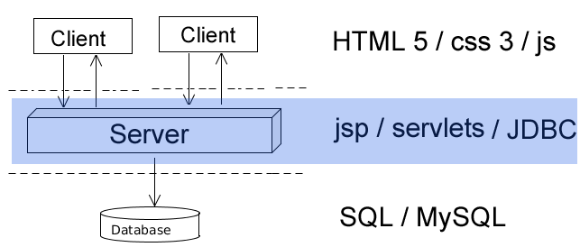

Relational
Databases
Created by Ilya Buziuk / @ilyabuziuk
Applications architecture

Applications architecture
Applications architecture
Applications architecture
Short Database History
Database (DB)
Organized collection of data
DB types
-
Navigational
-
SQL / Relational
-
Post-relational
Beyond SQL
NoSQL


Graph

Object Oriented
Relational
Databases
Edgar Codd

Relational Model
All data is represented in terms of tuples, grouped into relations
Relation = Table n * m

Relation = Table n * m
Tuple = row in Table
Attribute = column in Table
Domain = Attribute's possible values
Primary Key = Unique identifier

Primary Key
-
Unique
-
Not NULL
-
ONE primary key
PK best practice
-
As small as necessary
-
Prefer a numeric type
-
Do NOT use "your problem primary key"
Surrogate
vs
Natural
Database normalization
Organizing the attributes and tables of a relational database to minimize data redundancy
1NF
Each attribute contains only atomic values
1NF
2NF
1NF + non-prime attribute is dependent on full PK
2NF
3NF
2NF + non-prime attribute do not depend on other non-prime attributes
In a Nutshell
The data is atomic [1NF], depends on the whole key [2NF] and nothing but the key [3NF]
Relationship Types
Relationship types
One-to-One
One-to-Many

Many-to-Many

Foreign Key
Popular Relational Databases
MySQL
MySQL
Codebase: C / C++
Primary Use: DB Server
Location: GitHub
Maria DB

Larry Ellison
SQL
Structured Query Language
General Data Types
-
INT
-
TINYINT
-
DATE
-
DATETIME
-
CHAR
-
VARCHAR
-
DATETIME
General Data Types
BOOLEAN = TINYINT(1)
SQL
-
Data Definition Language
-
Data Manipulation Language
Data Definition Language
-
CREATE TABLE
-
DROP TABLE
-
ALTER TABLE
CREATE TABLE
CREATE TABLE Persons (
P_Id int NOT NULL,
LastName varchar(255) NOT NULL,
FirstName varchar(255),
Address varchar(255),
City varchar(255),
PRIMARY KEY (P_Id)
)
DROP TABLE
DROP TABLE table_name
Data Manipulation Language
-
SELECT
-
UPDATE
-
INSERT
-
DELETE
Select
SELECT * FROM Customers;
SELECT CustomerName,City FROM Customers;
INSERT
INSERT INTO messages (message_id, description) VALUES (1, 'Learn SQL');
From theory to practise
Console + GUI demo
MUST link
http://www.w3schools.com/sql/
How to install?
MySQL Server + Workbench
Windows
-
Oracle account
-
MSI installer
Mac OS
-
Oracle account
-
PKG installer
Linux
-
sudo apt-get install mysql-server
-
sudo apt-get install mysql-client
-
sudo apt-get install mysql-workbench